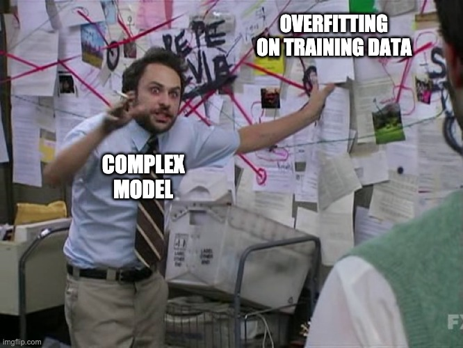
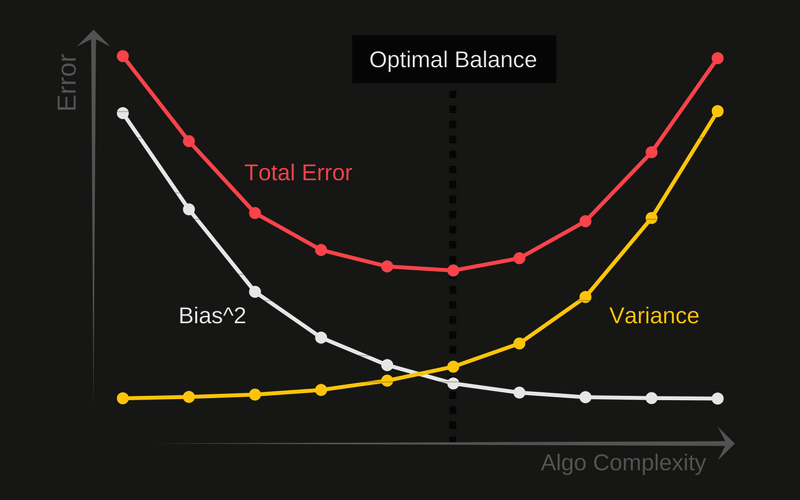
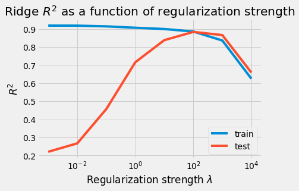
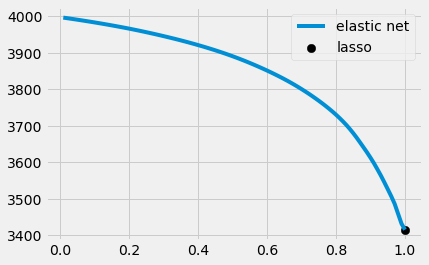

Table of Contents
from sklearn.preprocessing import StandardScaler, PolynomialFeatures, OneHotEncoder
from sklearn.linear_model import Ridge, Lasso, ElasticNet, LinearRegression,\
LassoCV, RidgeCV, ElasticNetCV
from sklearn.model_selection import train_test_split, KFold,\
cross_val_score, cross_validate, ShuffleSplit
from sklearn.metrics import mean_squared_error
import pandas as pd
import numpy as np
import seaborn as sns
import matplotlib.pyplot as plt
Agenda
SWBAT:
Explain the notion of “validation data”
Use the algorithm of cross-validation (with
sklearn)Explain the concept of regularization
Use Lasso and Ridge regularization in model design
One of the goals of a machine learning project is to make models which are highly predictive. If the model fails to generalize to unseen data then the model is bad.
When a Good Model Goes Bad#
One of the goals of a machine learning project is to make models which are highly predictive
Adding complexity to a model can find patterns to help make better predictions!
But too much complexity can lead to the model finding patterns in the noise…

So how do we know when our model is ~~a conspiracy theorist~~ overfitting?
Bias-Variance Tradeoff#
High bias
Systematic error in predictions
Bias is about the strength of assumptions the model makes
Underfit models tend to have high bias
High variance
The model is highly sensitive to changes in the data
Overfit models tend to have low bias

Aside: Example of high bias and variance#
High bias is easy to wrap one’s mind around: Imagine pulling three red balls from an urn that has hundreds of balls of all colors in a uniform distribution. Then my sample is a terrible representative of the whole population. If I were to build a model by extrapolating from my sample, that model would predict that every ball produced would be red! That is, this model would be incredibly biased.
High variance is a little bit harder to visualize, but it’s basically the “opposite” of this. Imagine that the population of balls in the urn is mostly red, but also that there are a few balls of other colors floating around. Now imagine that our sample comprises a few balls, none of which is red. In this case, we’ve essentially picked up on the “noise”, rather than the “signal”. If I were to build a model by extrapolating from my sample, that model would be needlessly complex. It might predict that balls drawn before noon will be orange and that balls drawn after 8pm will be green, when the reality is that a simple model that predicted ‘red’ for all balls would be a superior model!
The important idea here is that there is a trade-off: If we have too few data in our sample (training set), or too few predictors, we run the risk of high bias, i.e. an underfit model. On the other hand, if we have too many predictors (especially ones that are collinear), we run the risk of high variance, i.e. an overfit model.
Here is a nice illustration of the difficulty.
{kind=link}
Underfitting#
Underfit models fail to capture all of the information in the data
low complexity –> high bias, low variance
training error: large
testing error: large
Overfitting#
Overfit models fit to the noise in the data and fail to generalize
high complexity –> low bias, high variance
training error: low
testing error: large
How Do We Identify a Bad Model? 🕵️#
Solution - Model Validation#
Generally speaking we want to take more precautions than using just a test and train split. After all, we’re still imagining building just one model on the training set and then crossing our fingers for its performance on the test set.
Data scientists often distinguish three subsets of data: training, validation (dev), and testing
Roughly:
Training data is for building the model;
Validation data is for tweaking the model;
Testing data is for evaluating the model on unseen data.
Think of training data as what you study for a test
Think of validation data is using a practice test (note sometimes called dev)
Think of testing data as what you use to judge the model
A holdout set is when your test dataset is never used for training (unlike in cross-validation)
Steps:#
Split data into training data and a holdout test
Design a model
Evaluate how well it generalizes with cross-validation (only training data)
Determine if we should adjust model, use cross-validation to evaluate, and repeat
After iteratively adjusting your model, do a final evaluation with the holdout test set
DON’T TOUCH THE MODEL!!!
The Power of the Validation Set#
This “tweaking” includes most of all the fine-tuning of model parameters (see below). Think of what this three-way distinction allows us to do:
I can build a model on some data. Then, before I introduce the model to the testing data, I can introduce it to a different batch of data (the validation set). With respect to the validation data I can do things like measure error and tweak model parameters to minimize that error. Of course, I also don’t want to lose sight of the error on the training data. If the model error has been minimized on the training error, then of course any changes I make to the model parameters will take me away from that minimum. But still the new information I’ve gained by looking at the model’s performance on the validation data is valuable. I might for example go with a kind of compromising model whose parameters produce an error that’s not too big on the training data and not too big on the validation data.
Question: What’s different about this procedure from what we’ve described before? Aren’t I just calling the test data “validation data” now? Is there any substantive difference?
From Validation to Cross-Validation#
Since my model will “see” the validation data in any case, I might as well use all of my training data to validate my model! How do I do this?
Cross-validation works like this: First I’ll partition my training data into \(k\)-many folds. Then I’ll train a model on \(k-1\) of those folds and “test” it on the remaining fold. I’ll do this for all possible divisions of my \(k\) folds into \(k-1\) training folds and a single “testing” fold. Since there are \(k\choose 1\)\(=k\)-many ways of doing this, I’ll be building \(k\)-many models!
Python Example#
birds = sns.load_dataset('penguins')
birds.sample(5)
| species | island | bill_length_mm | bill_depth_mm | flipper_length_mm | body_mass_g | sex | |
|---|---|---|---|---|---|---|---|
| 342 | Gentoo | Biscoe | 45.2 | 14.8 | 212.0 | 5200.0 | Female |
| 85 | Adelie | Dream | 41.3 | 20.3 | 194.0 | 3550.0 | Male |
| 31 | Adelie | Dream | 37.2 | 18.1 | 178.0 | 3900.0 | Male |
| 116 | Adelie | Torgersen | 38.6 | 17.0 | 188.0 | 2900.0 | Female |
| 288 | Gentoo | Biscoe | 43.5 | 14.2 | 220.0 | 4700.0 | Female |
birds.info()
<class 'pandas.core.frame.DataFrame'>
RangeIndex: 344 entries, 0 to 343
Data columns (total 7 columns):
# Column Non-Null Count Dtype
--- ------ -------------- -----
0 species 344 non-null object
1 island 344 non-null object
2 bill_length_mm 342 non-null float64
3 bill_depth_mm 342 non-null float64
4 flipper_length_mm 342 non-null float64
5 body_mass_g 342 non-null float64
6 sex 333 non-null object
dtypes: float64(4), object(3)
memory usage: 18.9+ KB
# For simplicity's sake we'll limit our analysis to the numeric columns.
numeric = birds[['bill_length_mm', 'bill_depth_mm',
'flipper_length_mm', 'body_mass_g']]
# We'll drop the rows with null values
numeric = numeric.dropna().reset_index()
Suppose I want to model body_mass_g as a function of the other attributes.
X = numeric.drop('body_mass_g', axis=1)
y = numeric['body_mass_g']
We’ll make ten models and record our evaluations of them.
lr2 = LinearRegression()
cv_results = cross_validate(
X=X,
y=y,
estimator=lr2,
cv=10,
scoring=('r2', 'neg_mean_squared_error'),
return_train_score=True
)
cv_results.keys()
dict_keys(['fit_time', 'score_time', 'test_r2', 'train_r2', 'test_neg_mean_squared_error', 'train_neg_mean_squared_error'])
cv_results.get('test_r2')
array([-0.42725693, 0.34759891, 0.26457031, 0.18940771, -0.23644035,
-0.11124329, 0.64439272, 0.46668576, 0.70389366, -0.05362906])
# See how we did compare the results?
-1*cv_results.get('train_neg_mean_squared_error').mean(), (-1*cv_results.get('train_neg_mean_squared_error')).std()
-1*cv_results.get('test_neg_mean_squared_error').mean(), (-1*cv_results.get('test_neg_mean_squared_error')).std()
(172805.4550294319, 52592.60213257134)
-1*cv_results.get('test_neg_mean_squared_error').mean(), (-1*cv_results.get('test_neg_mean_squared_error')).std()
(172805.4550294319, 52592.60213257134)
Preventing Overfitting - Regularization#
Again, complex models are very flexible in the patterns that they can model but this also means that they can easily find patterns that are simply statistical flukes of one particular dataset rather than patterns reflective of the underlying data-generating process.
When a model has large weights, the model is “too confident”. This translates to a model with high variance which puts it in danger of overfitting!
We need to punish large (confident) weights by contributing them to the error function
Some Types of Regularization:
Reducing the number of features
Increasing the amount of data
Popular techniques: Ridge, Lasso, Elastic Net
The Strategy Behind Ridge / Lasso / Elastic Net#
Overfit models overestimate the relevance that predictors have for a target. Thus overfit models tend to have overly large coefficients.
Generally, overfitting models come from a result of high model variance. High model variance can be caused by:
having irrelevant or too many predictors
multicollinearity
large coefficients
The evaluation of many models, linear regression included, proceeds by measuring its error, some quantifiable expression of the discrepancy between its predictions and the ground truth. The best-fit line of LR, for example, minimizes the sum of squared residuals.
Our new idea, then, will be to add a term representing the size of our coefficients to our loss function. This will be our cost function \(J\).
The goal will still be to minimize this new function, but we can make progress toward this minimum either by reducing the size of our residuals or by reducing the size of our coefficients.
Since coefficients can be either negative or positive, we have the familiar difficulty that we can’t simply add them up to get a sense of how large they are in general. Once again there are two natural choices: We could focus either on the squares or the absolute values of the coefficients. The former strategy is the basis for Ridge (also called Tikhonov) regularization; the latter strategy results in Lasso (Least Absolute Shrinkage and Selection Operator) regularization.
These tools, as we shall see, are easily implemented with sklearn.
Regularization is about introducing a factor into our model designed to enforce the stricture that the coefficients stay small, by penalizing the ones that get too large.
That is, we’ll alter our loss function so that the goal now is not merely to minimize the difference between actual values and our model’s predicted values. Rather, we’ll add in a term to our loss function that represents the sizes of the coefficients.
Ridge and Lasso Regression#
The first problem is about picking up on noise rather than signal. The second problem is about having a least-squares estimate that is highly sensitive to random error. The third is about having highly sensitive predictors.
Regularization is about introducing a factor into our model designed to enforce the stricture that the coefficients stay small, by penalizing the ones that get too large.
That is, we’ll alter our loss function so that the goal now is not merely to minimize the difference between actual values and our model’s predicted values. Rather, we’ll add in a term to our loss function that represents the sizes of the coefficients.
Lasso: L1 Regularization - Absolute Value#
Tend to get sparse vectors (small weights go to 0)
Reduce number of weights
Good feature selection to pick out importance
Ridge: L2 Regularization - Squared Value#
Not sparse vectors (weights homogeneous & small)
Tends to give better results for training
🤔 Which Do I Use?#
Typically you’ll want to use L2 regularization
For a given value of \(\lambda\), the ridge makes for a gentler reining in of runaway coefficients. When in doubt, try ridge first.
The lasso will more quickly reduce the contribution of individual predictors down to insignificance. It is therefore most useful for trimming through the fat of datasets with many predictors or if a model with very few predictors is especially desirable.
Comparing L1 & L2 Regularization#
This is a bit subtle:
Consider vectors: [1,0] & [0.5, 0.5]
Recall we want smallest value for our value
L2 prefers [0.5,0.5] over [1,0]
For a nice discussion of these methods in Python, see this post.
The Best of Both Worlds: Elastic Net#
There is a combination of L1 and L2 regularization called the Elastic Net that can also be used. The idea is to use a scaled linear combination of the lasso and the ridge, where the weights add up to 100%. We might want 50% of each, but we also might want, say, 10% Lasso and 90% Ridge.
The loss function for an Elastic Net Regression looks like this:
Elastic Net:
\(\rho\Sigma^{n_{obs.}}_{i=1}[(y_i - \Sigma^{n_{feat.}}_{j=0}\beta_j\times x_{ij})^2 + \lambda\Sigma^{n_{feat.}}_{j=0}|\beta_j|] + (1 - \rho)\Sigma^{n_{obs.}}_{i=1}[(y_i - \Sigma^{n_{feat.}}_{j=0}\beta_j\times x_{ij})^2 + \lambda\Sigma^{n_{feat.}}_{j=0}\beta^2_j]\)
Sometimes you will see this loss function represented with different scaling terms, but the basic idea is to have a combination of L1 and L2 regularization terms.
Code it Out!#
Producing an Overfit Model#
We can often produce an overfit model by including interaction terms. We’ll start over with the penguins dataset. This time we’ll include the categorical features.
Train-Test Split#
birds = sns.load_dataset('penguins')
birds = birds.dropna()
birds.head()
| species | island | bill_length_mm | bill_depth_mm | flipper_length_mm | body_mass_g | sex | |
|---|---|---|---|---|---|---|---|
| 0 | Adelie | Torgersen | 39.1 | 18.7 | 181.0 | 3750.0 | Male |
| 1 | Adelie | Torgersen | 39.5 | 17.4 | 186.0 | 3800.0 | Female |
| 2 | Adelie | Torgersen | 40.3 | 18.0 | 195.0 | 3250.0 | Female |
| 4 | Adelie | Torgersen | 36.7 | 19.3 | 193.0 | 3450.0 | Female |
| 5 | Adelie | Torgersen | 39.3 | 20.6 | 190.0 | 3650.0 | Male |
X_train, X_test, y_train, y_test = train_test_split(
birds.drop('body_mass_g', axis=1),
birds['body_mass_g'],
random_state=42
)
# Taking in other features (category)
ohe = OneHotEncoder(drop='first')
dummies = ohe.fit_transform(X_train[['species', 'island', 'sex']])
# Getting a DF
dummies_df = pd.DataFrame(dummies.todense(), columns=ohe.get_feature_names(),
index=X_train.index)
# What we'll feed int our model
X_train_df = pd.concat([X_train[['bill_length_mm', 'bill_depth_mm',
'flipper_length_mm']], dummies_df], axis=1)
X_train_df.head()
| bill_length_mm | bill_depth_mm | flipper_length_mm | x0_Chinstrap | x0_Gentoo | x1_Dream | x1_Torgersen | x2_Male | |
|---|---|---|---|---|---|---|---|---|
| 321 | 55.9 | 17.0 | 228.0 | 0.0 | 1.0 | 0.0 | 0.0 | 1.0 |
| 265 | 43.6 | 13.9 | 217.0 | 0.0 | 1.0 | 0.0 | 0.0 | 0.0 |
| 36 | 38.8 | 20.0 | 190.0 | 0.0 | 0.0 | 1.0 | 0.0 | 1.0 |
| 308 | 47.5 | 14.0 | 212.0 | 0.0 | 1.0 | 0.0 | 0.0 | 0.0 |
| 191 | 53.5 | 19.9 | 205.0 | 1.0 | 0.0 | 1.0 | 0.0 | 1.0 |
Our Test Data:
# Note the same transformation (not FIT) to match structure
test_dummies = ohe.transform(X_test[['species', 'island', 'sex']])
test_df = pd.DataFrame(test_dummies.todense(), columns=ohe.get_feature_names(),
index=X_test.index)
X_test_df = pd.concat([X_test[['bill_length_mm', 'bill_depth_mm',
'flipper_length_mm']], test_df], axis=1)
First simple model#
lr1 = LinearRegression()
lr1.fit(X_train_df, y_train)
LinearRegression()
lr1.score(X_train_df, y_train)
0.8688983108974327
Let’s do some cross-validation!
cv_results = cross_validate(
X=X_train_df,
y=y_train,
estimator=lr1,
cv=10,
scoring=('r2', 'neg_mean_squared_error'),
return_train_score=True
)
cv_results.keys()
dict_keys(['fit_time', 'score_time', 'test_r2', 'train_r2', 'test_neg_mean_squared_error', 'train_neg_mean_squared_error'])
train_res = cv_results['train_r2']
train_res
array([0.86804859, 0.87184762, 0.86639447, 0.86902092, 0.86919768,
0.86625747, 0.86680671, 0.8768277 , 0.869645 , 0.86906114])
valid_res = cv_results['test_r2']
valid_res
array([0.86092305, 0.68845759, 0.88730555, 0.85315477, 0.85555065,
0.88779582, 0.87796788, 0.71839192, 0.85080305, 0.86263277])
Peeking at the end (test data) 👀#
pens_preds = lr1.predict(X_test_df)
lr1.score(X_test_df, y_test)
0.8934228693424332
np.sqrt(mean_squared_error(pens_preds, y_test))
253.98121177477847
Add Polynomial Features#
pf = PolynomialFeatures(degree=3)
X_poly_train = pf.fit_transform(X_train_df)
X_poly_test = pf.transform(X_test_df)
Train the model and evaluate (with cross-validation)
poly_lr = LinearRegression()
poly_lr.fit(X_poly_train, y_train)
LinearRegression()
poly_lr.score(X_poly_train, y_train)
0.8929837558447916
cv_results = cross_validate(
X=X_poly_train,
y=y_train,
estimator=poly_lr,
cv=10,
scoring=('r2', 'neg_mean_squared_error'),
return_train_score=True
)
train_res = cv_results['train_r2']
train_res
array([0.81274495, 0.90586699, 0.87121854, 0.86791377, 0.87630341,
0.89249433, 0.8777283 , 0.89532593, 0.91414692, 0.80533058])
valid_res = cv_results['test_r2']
valid_res
array([ 0.58415873, -0.98182044, 0.57883757, 0.67200791, 0.13603473,
0.51348523, 0.11073351, 0.17470108, 0.81904846, 0.56611477])
Peeking at the end (test data) 👀#
poly_lr.score(X_poly_test, y_test)
-1.033922291434676
poly_preds = poly_lr.predict(X_poly_test)
np.sqrt(mean_squared_error(poly_preds, y_test))
1109.5241438534135
Ridge (L2) Regression#
ss = StandardScaler()
pf = PolynomialFeatures(degree=3)
# You should always be sure to _standardize_ your data before
# applying regularization!
X_train_processed = pf.fit_transform(ss.fit_transform(X_train_df))
X_test_processed = pf.transform(ss.transform(X_test_df))
# 'Lambda' is the standard variable for the strength of the
# regularization (as in the above formulas), but since lambda
# is a key word in Python, these sklearn regularization tools
# use 'alpha' instead.
rr = Ridge(alpha=100, random_state=42)
rr.fit(X_train_processed, y_train)
Ridge(alpha=100, random_state=42)
rr.score(X_train_processed, y_train)
0.8858195769398121
cv_results = cross_validate(
X=X_train_processed,
y=y_train,
estimator=rr,
cv=10,
scoring=('r2', 'neg_mean_squared_error'),
return_train_score=True
)
cv_results['train_r2']
array([0.88768944, 0.886945 , 0.88701008, 0.88207217, 0.88887472,
0.8843449 , 0.88600675, 0.88848898, 0.88421626, 0.88539415])
cv_results['test_r2'].std()
0.03899882445781112
Peeking at the end (test data) 👀#
ridge_preds = rr.predict(X_test_processed)
rr.score(X_test_processed, y_test)
0.8835871366582229
np.sqrt(mean_squared_error(ridge_preds, y_test))
265.4422590836657
Much better! But how do we know which value of alpha to pick?
Cross Validation to Optimize the Regularization Hyperparameter#
The regularization strength could sensibly be any nonnegative number, so there’s no way to check “all possible” values. It’s often useful to try several values that are different orders of magnitude.
alphas = [1e-3, 1e-2, 1e-1, 1, 10, 100, 1000, 10_000]
train_scores = []
test_scores = []
for alpha in alphas:
rr = Ridge(alpha=alpha, random_state=42)
rr.fit(X_train_processed, y_train)
train_score = rr.score(X_train_processed, y_train)
test_score = rr.score(X_test_processed, y_test)
train_scores.append(train_score)
test_scores.append(test_score)
plt.style.use('fivethirtyeight')
fig, ax = plt.subplots()
plt.xscale('log')
plt.title('Ridge $R^2$ as a function of regularization strength')
ax.set_xlabel('Regularization strength $\lambda$')
ax.set_ylabel('$R^2$')
ax.plot(alphas, train_scores, label='train')
ax.plot(alphas, test_scores, label='test')
plt.legend();

It looks like the best value is somewhere around 100. If we wanted more precision, we could repeat the same sort of exercise with a set of alphas nearer to 100.
Observation#
Notice how the values increase but then decrease? Regularization helps with overfitting, but if the strength of the regularization becomes too great, then large coefficients will be punished more than they really should. What happens then is that the original error between truth and model predictions becomes neglected as a quantity to be minimized, and the bias of the model begins to outweigh its variance.
LEVEL UP - Elastic Net!#
Naturally, the Elastic Net has the same interface through sklearn as the other regularization tools! The only difference is that we now have to specify how much of each regularization term we want. The name of the parameter for this (represented by \(\rho\) above) in sklearn is l1_ratio.
enet = ElasticNet(alpha=10, l1_ratio=0.1, random_state=42)
enet.fit(X_train_processed, y_train)
ElasticNet(alpha=10, l1_ratio=0.1, random_state=42)
enet.score(X_train_processed, y_train)
0.7967984860498589
enet.score(X_test_processed, y_test)
0.8341204160263829
Setting the l1_ratio to 1 is equivalent to the lasso:
ratios = np.linspace(0.01, 1, 100)
preds = []
for ratio in ratios:
enet = ElasticNet(alpha=100, l1_ratio=ratio, random_state=42)
enet.fit(X_train_processed, y_train)
preds.append(enet.predict(X_test_processed[0].reshape(1, -1)))
fig, ax = plt.subplots()
lasso = Lasso(alpha=100, random_state=42)
lasso.fit(X_train_processed, y_train)
lasso_pred = lasso.predict(X_test_processed[0].reshape(1, -1))
ax.plot(ratios, preds, label='elastic net')
ax.scatter(1, lasso_pred, c='k', s=70, label='lasso')
plt.legend();

Note on ElasticNet()#
Is an Elastic Net with l1_ratio set to 0 equivalent to the ridge? In theory yes. But in practice no. It looks like the ElasticNet() predictions on the first test data point as l1_ratio shrinks are tending toward some value around 3400. Let’s check to see what prediction Ridge() gives us:
ridge = Ridge(alpha=10, random_state=42)
ridge.fit(X_train_processed, y_train)
ridge.predict(X_test_processed[0].reshape(1, -1))[0]
3092.742107522179
If you check the docstring for the ElasticNet() class you will see:
that the function being minimized is slightly different from what we saw above; and
that the results are unreliable when
l1_ratio\(\leq 0.01\).
Exercise: Visualize the difference in this case between ElasticNet(l1_ratio=0.01) and Ridge() by making a scatterplot of each model’s predicted values for the first ten points in X_test_processed. Use alpha=10 for each model.
Level Up: Make a second scatterplot that compares the predictions on the same data
points between ElasticNet(l1_ratio=1) and Lasso().
Answer
fig, ax = plt.subplots()
enet_r = ElasticNet(alpha=10, l1_ratio=0.01, random_state=42)
enet_r.fit(X_train_processed, y_train)
preds_enr = enet_r.predict(X_test_processed[:10])
preds_ridge = ridge.predict(X_test_processed[:10])
ax.scatter(np.arange(10), preds_enr)
ax.scatter(np.arange(10), preds_ridge);
Level Up
fig, ax = plt.subplots()
enet_l = ElasticNet(alpha=10, l1_ratio=1, random_state=42)
enet_l.fit(X_train_processed, y_train)
preds_enl = enet_l.predict(X_test_processed[:10])
preds_lasso = lasso.predict(X_test_processed[:10])
ax.scatter(np.arange(10), preds_enl)
ax.scatter(np.arange(10), preds_lasso);
Fitting Regularized Models with Cross-Validation#
Our friend sklearn also includes tools that fit regularized regressions with cross-validation: LassoCV, RidgeCV, and ElasticNetCV.
Exercise: Use RidgeCV to fit a seven-fold cross-validated ridge regression model to our X_train_processed data and then calculate \(R^2\) and the RMSE (root-mean-squared error) on our test set.
Answer
rcv = RidgeCV(cv=7)
rcv.fit(X_train_processed, y_train)
rcv.score(X_test_processed, y_test)
np.sqrt(mean_squared_error(y_test, rcv.predict(X_test_processed)))